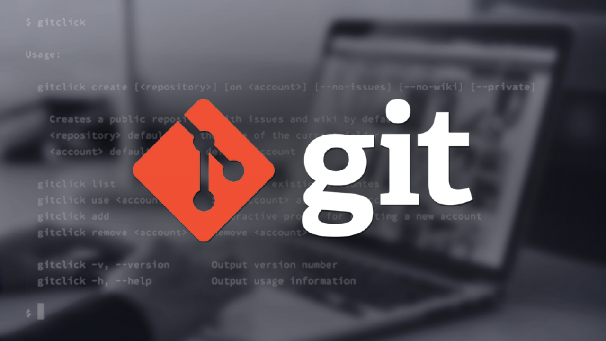

Git es un sistema de control de versiones(añadir enlace a página interna de la web con explicación de SCV). La principal diferencia entre Git y cualquier otro SCV, es la forma en la que maneja sus datos.
Convencionalmente, un SCV almacena la información como una lista de cambios en los archivos, mientras que Git maneja sus datos como un conjunto de copias. Es decir, cada vez que confirmamos un cambio y guardamos, almacena una “foto” del aspecto de los archivos en ese momento y guarda una referencia a la foto. Para ahorrar espacio, los archivos que no han sido modificados, no necesitan volver a ser guardados. 
La mayoria de las operaciones en Git, sólo necesitan archivos y recursos locales, por lo que las operaciones aparecen inmediatas y no necesita conectarse al servidor para obtener la historia del proyecto. Los datos son leidos de una base de datos local.
-Funcionamiento de Git-
Todo en Git es verificado mediante un código de comprobacion, lo que significa que no se puede cambiar nada sin que este se entere. La forma en la que lo realiza, es una cadena de 40 caracteres Hexadecimales hash SHA-1.
- Git trabaja con tres estados:
Confirmado: Datos almacenados de forma segura en la base de datos local.
Modificado: Datos modificados pero no confirmados a la base de datos.
Preparado: Archivo modificado en la versión actual para actualizar en la próxima confirmación.
- De este modo se define la forma de trabajar como usuario al trabajar con Git.
- 1.Modificas los archivos en tu directorio de trabajo.
- 2.Preparas los archivos añadiendolos al área de preparación.
- 3.Confirmas los archivos que están en el área de preparación y los almacenas en tu directorio Git.
- -Comandos de Git-
-Para añadir el repositorio GIT, utilizaremos el comando
git init
git commit -m ‘NombreDelCommit’